Photographic safaris
Photographic and wilderness safaris
Capture the Big Five in their natural habitat in game-rich areas such as Hwange and Matusadona, with cruising on Lake Kariba.
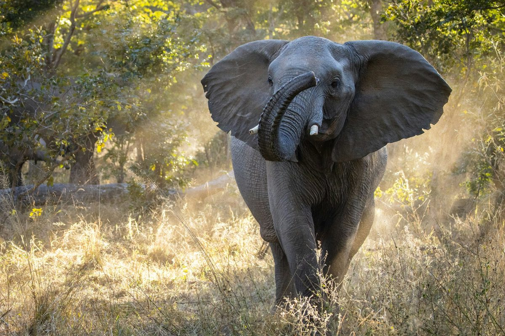

Home / Destinations
Zimbabwe, Southern and East Africa
Malachite offers packages in Zimbabwe, South Africa, Botswana, Tanzania, Kenya and Uganda.
Choose a country to jump straight to it. Each one shows what there is to see and do, and the Malachite packages that go with it.
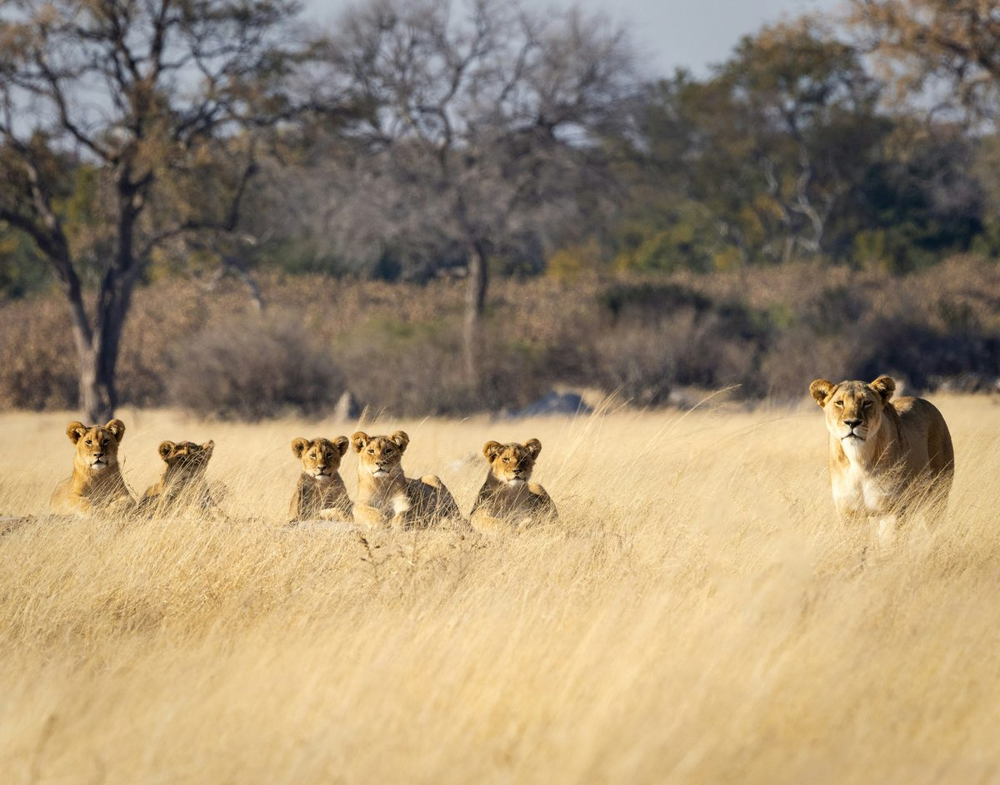
Zimbabwe
Game-rich parks and wild river country, explored by vehicle, on foot and by canoe.
From Hwange to Mana Pools, Zimbabwe's national parks can be explored by vehicle, on foot and by canoe.
Capture the Big Five in their natural habitat in game-rich areas such as Hwange and Matusadona, with cruising on Lake Kariba.

A UNESCO World Heritage Site on the Zambezi River: walking safaris with expert guides, canoe safaris past hippos and elephants, and luxury tented camps.

On Kariba's southern shore, reached mainly by boat, with game drives, walking safaris and rhino tracking on foot along the lakeshore.
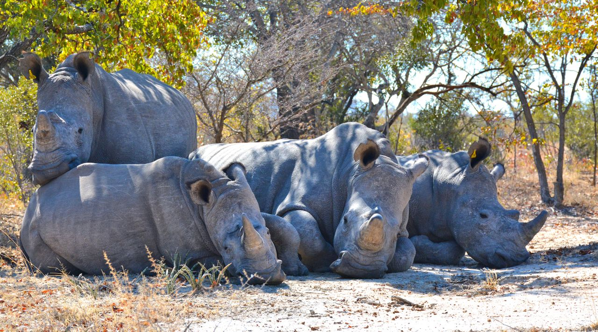
Zimbabwe's largest national park, with the country's largest population of elephants, lion prides and wild dogs.

Across Chimanimani, Chizarira and Gonarezhou national parks.
Mana Pools, Lake Kariba and Matusadona.
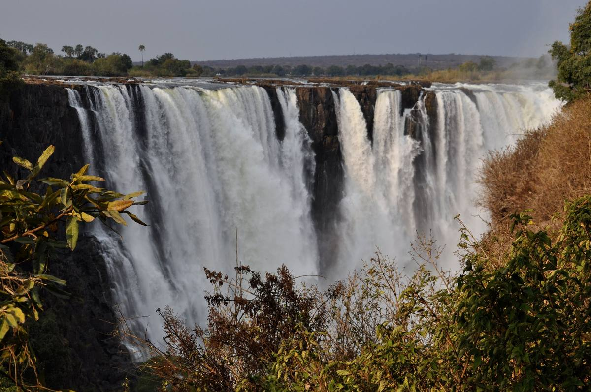
Zimbabwe
The Smoke That Thunders, one of the Seven Natural Wonders of the World.
The Mala Trans Borders Pack connects Victoria Falls in Zimbabwe, Chobe National Park in Botswana and Livingstone in Zambia. Malachite handles the transfers, park fees and border crossings.
One journey, three icons

Walk the rainforest trails, take a sunset cruise on the Zambezi and fly over the Falls in a helicopter.

Just one hour away: cruise the Chobe River as elephants, buffalo and hippos gather at the water's edge.

A different view of the Falls, Devil's Pool, white-water rafting and local markets.

Zimbabwe
Thousands of years of human history, from Great Zimbabwe to the rock paintings of the Matobo Hills.
Visit heritage sites such as the Great Zimbabwe Ruins, a UNESCO World Heritage Site, and the Matobo Hills, where ancient rock paintings tell the stories of Zimbabwe's earliest inhabitants.
Great Zimbabwe, the remains of a once-thriving ancient city known for its stone architecture and its role as a major trading centre in Southern Africa.

The Natural History Museum, the Khami Ruins and Matobo National Park.
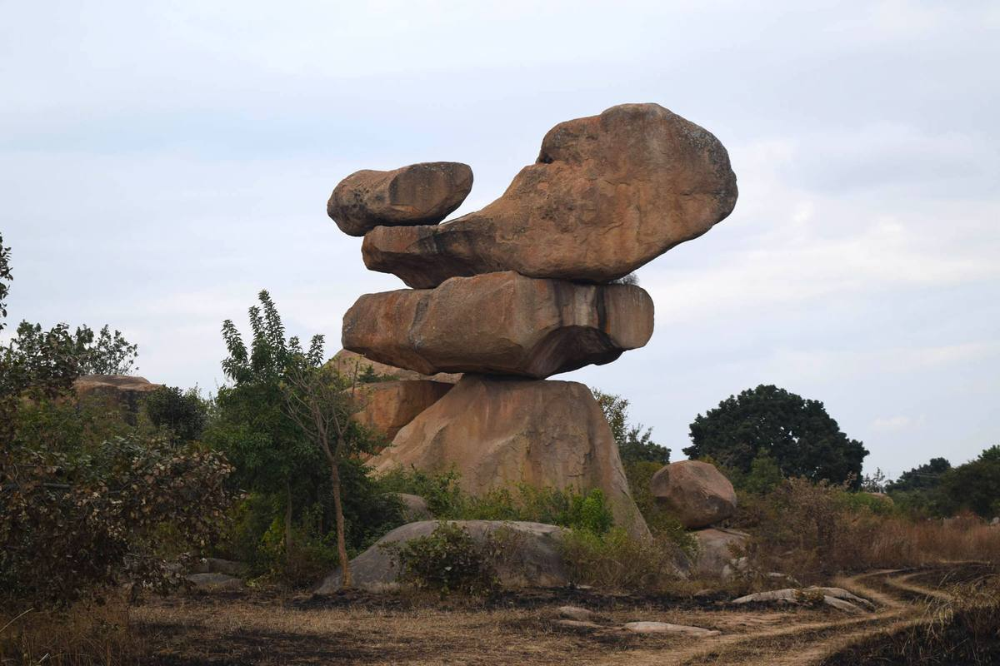
Landmarks such as National Heroes Acre in Harare, the Bulawayo Railway Museum and the Natural History Museum.
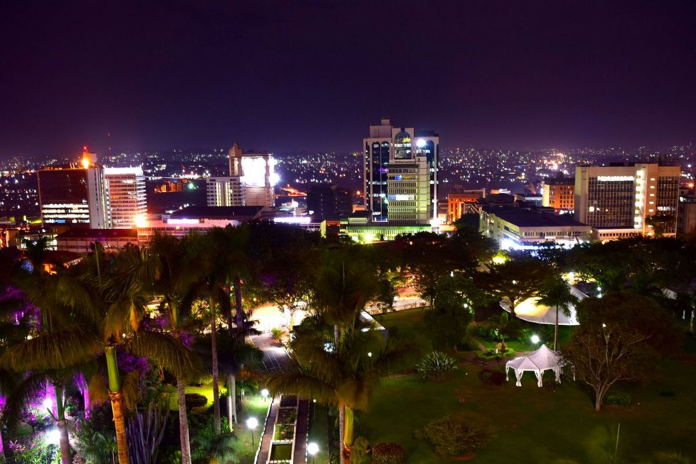
9 nights / 10 days: the Tonga people of Binga, Harare's markets and gallery, Mount Hampden and the Doma people of Kanyemba.

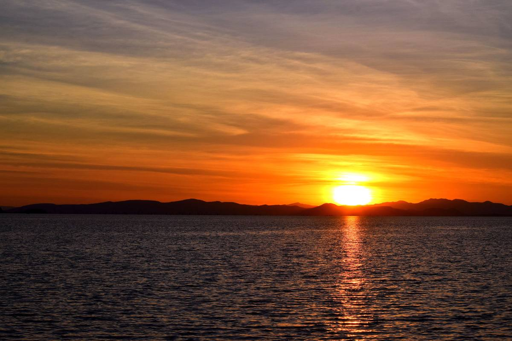
Zimbabwe
The largest man-made lake in the world by volume.
Sail the lake on a Malachite houseboat charter, with the Matusadona Mountain Range, abundant wildlife and fantastic fishing along the way.
Houseboat charters on Africa's great inland sea
Some 280 km of water, with sunsets behind drowned trees and elephants swimming at dawn.

Cruise on a private houseboat and sip sundowners as hippos surface around you.

Disembark for a walking safari, or camp on an island.

Try your hand at catching the famous tiger fish and bream.
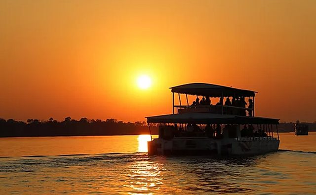
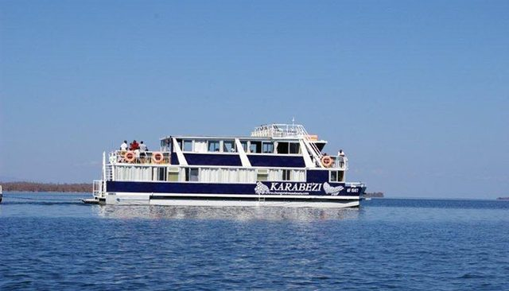

South Africa
Four packages of three to four nights each.
Human history in Gauteng, safaris and canyon scenery in Mpumalanga, the beaches of Durban and the sights of Cape Town.

The Cradle of Humankind, the Apartheid Museum and a guided walk through Lesedi Cultural Village.

Safaris in Kruger, then God’s Window, Bourke’s Luck Potholes and the Blyde River Canyon, with zip-lining and river rafting.

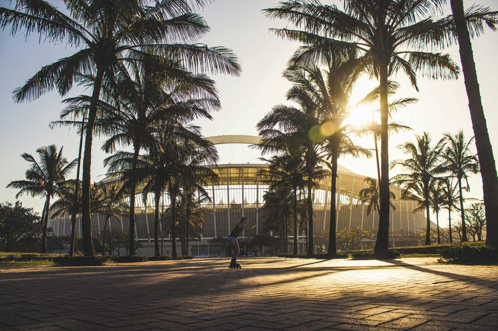
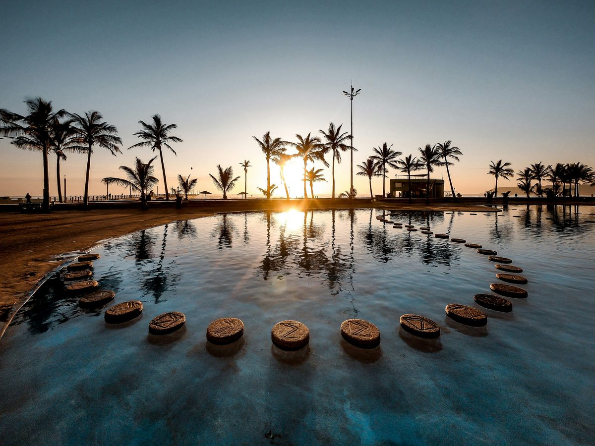
The Golden Mile and the south beaches, and marine life at uShaka Marine World.

Robben Island, the Table Mountain cable car, Cape Point, the Cape of Good Hope and wine tasting in Stellenbosch.
Botswana
Eight days across the Okavango Delta, Chobe and Maun.
One of the world’s largest inland deltas, a national park known for its vast elephant herds, and a gateway town where you can meet the Khoisan, among the world’s earliest peoples.
One of the world’s largest inland deltas, teeming with wildlife.
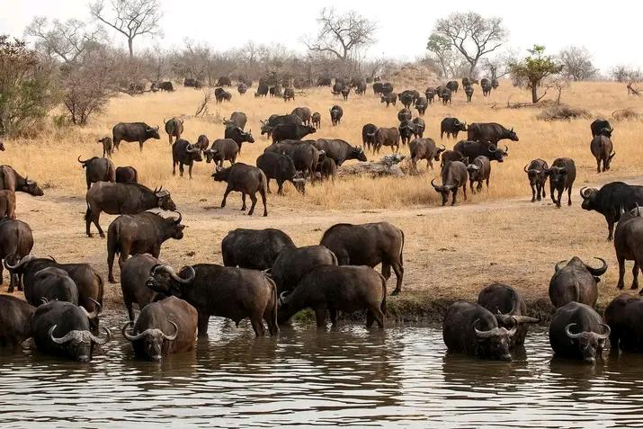
Famous for its extraordinarily vast elephant herds. Chobe is also part of the Mala Trans Borders Pack, an hour from Victoria Falls.

The gateway to the Okavango, with cultural experiences among the indigenous Khoisan.
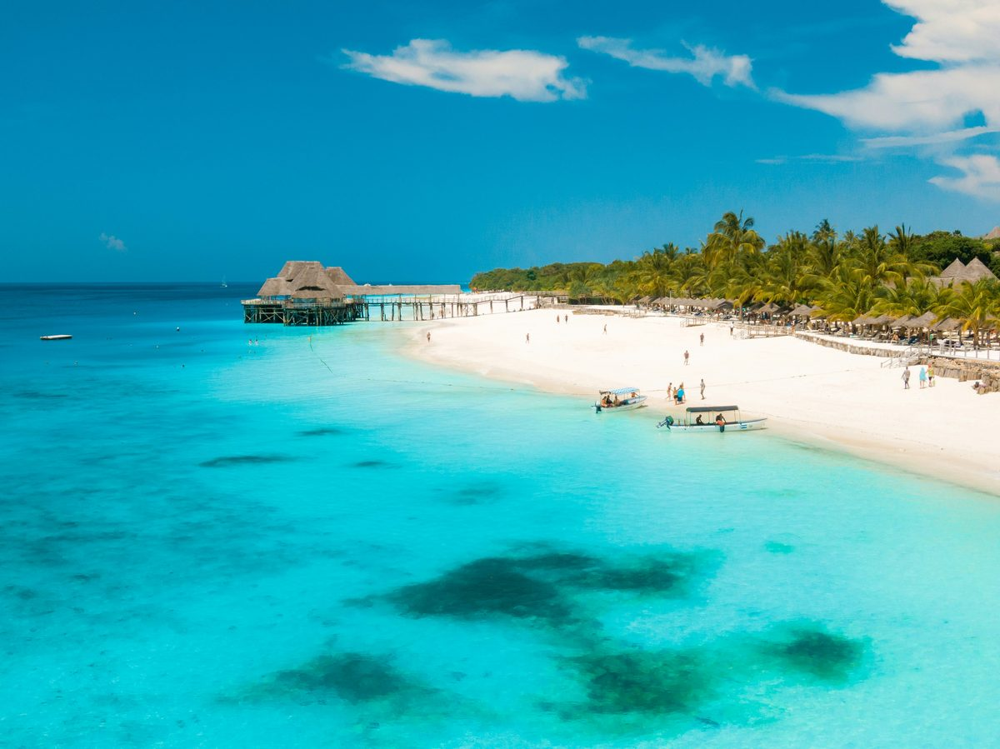
Tanzania
Nine days pairing the plains with the Indian Ocean coast.
Witness the annual wildebeest and zebra migration across the Serengeti, then trade the plains for the beaches and spice farms of Zanzibar.
The annual wildebeest and zebra migration, moving across the Maasai Mara trans-frontier as nature has always done, without borders.

Known for its beaches and spice farms.
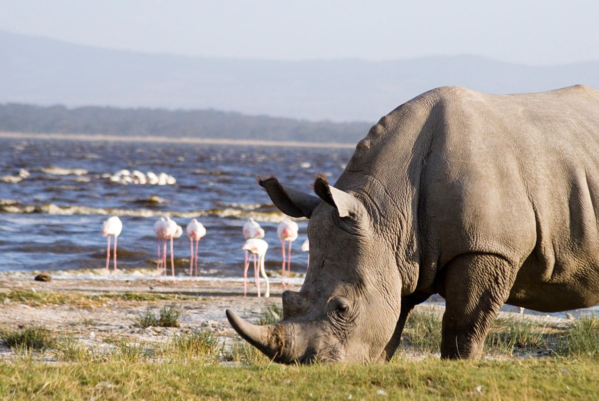
Kenya
Eight days from the Maasai Mara to the Indian Ocean.
Witness the Great Wildebeest Migration and the thriving Maasai culture, then finish on the coast, where clear water and pale sand are the reward.
The iconic Great Wildebeest Migration, and the uniquely thriving Maasai culture.

A coastal paradise with crystal-clear waters and pristine white sands, including the chance to swim with dolphins.


Uganda
Six days built around Uganda’s endangered primates.
Track gorillas and chimpanzees through Uganda’s forests, then settle beside Lake Bunyonyi, whose name is often translated as the “place of many little birds”.
Explore the rich biodiversity of Uganda’s forests while tracking these special and endangered primates.

A picturesque lake with tranquil water and an archipelago of 29 islands.
Fourteen packages across six countries, with itineraries and a quote on request, plus Lake Kariba houseboat charters.
Tell us where you want to go and who is travelling. We will help shape the rest.